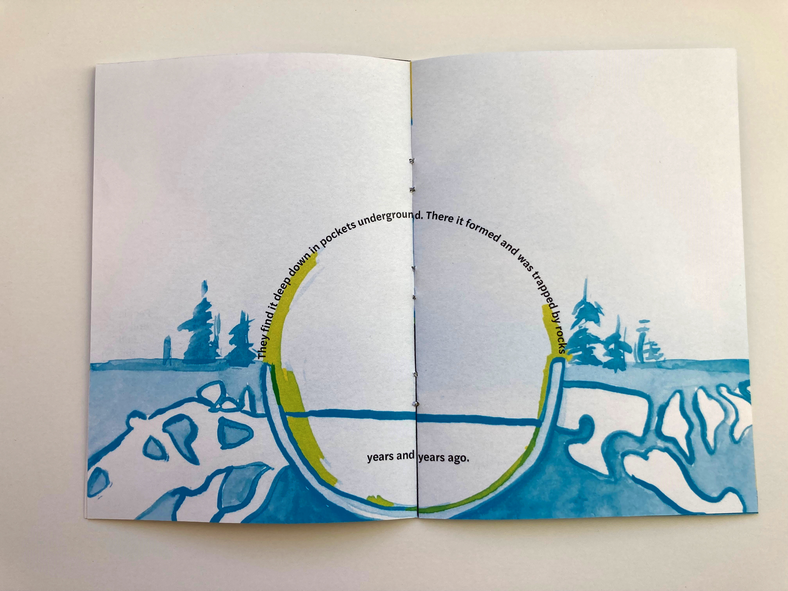

Natural Gas:
Illustrated Booklet
Back
Tasked with producing a booklet explaining the origin of natural gas, I explored several approaches &mdash type only, image only, and a combination of both &mdash before selecting the latter. Using analog materials allowed me to imbue the industrial nature of gas production with a more organic feeling.


© Sasha Kostenko 2022. Created by Sasha Kostenko. sasha.kostenko@wustl.edu